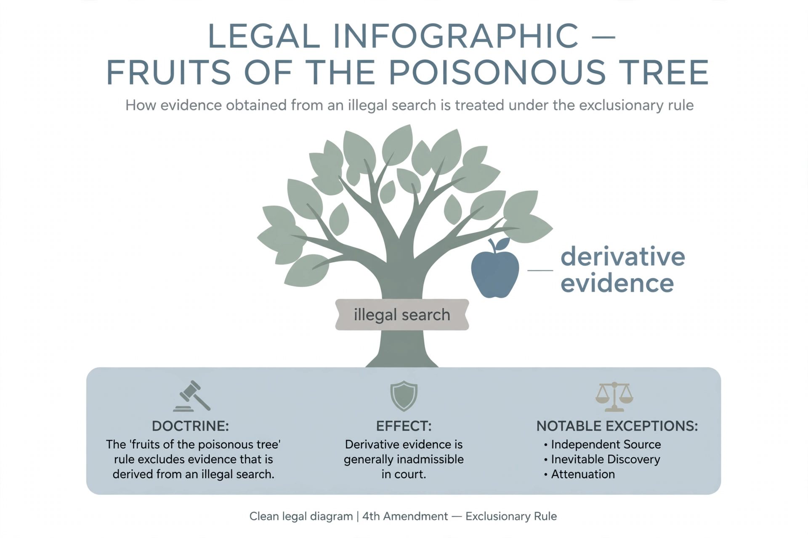

From Wikipedia, the free encyclopedia
| Fruit of the poisonous tree | |
|---|---|
| Type | Legal doctrine (United States criminal procedure) |
| Origin | Silverthorne Lumber Co. v. United States (1920); phrase coined in Nardone v. United States (1939) |
| Related rule | Exclusionary rule |
| Key cases | Wong Sun v. United States (1963); Nix v. Williams (1984) |

Fruit of the poisonous tree is a legal metaphor used in the United States to describe evidence that is obtained illegally. If the source of the evidence (the "tree") is tainted by a violation of a defendant's constitutional rights, then anything gained from it (the "fruit")—such as derivative evidence, confessions, or the location of further evidence—is also tainted and generally inadmissible in court under the exclusionary rule.
The underlying principle came from Silverthorne Lumber Co. v. United States (1920), where Justice Oliver Wendell Holmes held that the government could not use knowledge gained from its own illegal seizure of documents. Justice Felix Frankfurter coined the memorable phrase in Nardone v. United States (1939). The doctrine was applied fully to the states along with the exclusionary rule in the mid-twentieth century, and Wong Sun v. United States (1963) became its classic statement.
The doctrine applies to violations of the Fourth, Fifth, and Sixth Amendments. It does not generally apply in grand jury proceedings, civil cases, parole revocation hearings, or impeachment proceedings, and it bars the tainted evidence only from the prosecution's case-in-chief, not necessarily from cross-examination of a defendant who testifies inconsistently.